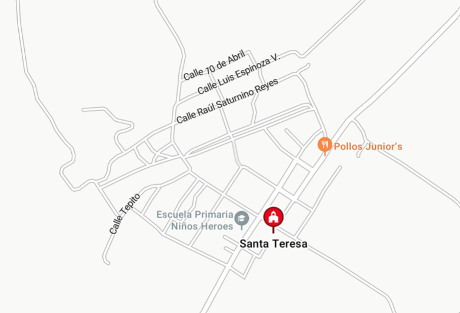

Visitas:0
En este sitio les hablaremos sobre el ejido de Santa Teresa Papaloapan, Tuxtepec, Oax, una pequeña comunidad en la Cuenca del Papaloapan cerca de la frontera entre Oaxaca y Veracruz. Es una localidad rural caracterizada por su historia, por su tranquilidad, cumunidad unida, tradiciones, su ubicación geografica que es muy importante para el sector agrícola ya que es una de las comunidades con mayor producción de platano macho en la región. Los invitamos a explorar y conocer un poco sobre esta bella comunida, llena de tradiciones y cultura.
Los temas de los que hablaremos en especial son los siguientes:
